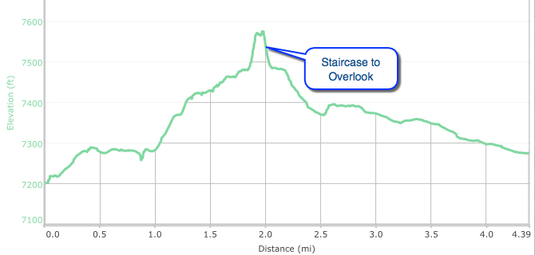

El Calderon Loop Trail



- Oct 29, 2015: Looking into an 80 ft hole
- May 23, 2016: On the edge of a double sink
- May 23, 2016: The view along the trail
- May 23, 2016: Walking uphill to El Calderon
- May 23, 2016: Rich colors of the Calderon
- May 23, 2016: A steep climb up the Calderon for a view
- https://www.flickr.com/photos/139088815@N08/27204617461/in/photostream/
- https://www.flickr.com/photos/139088815@N08/27274786645/in/photostream/
- https://www.flickr.com/photos/139088815@N08/27177713472/in/photostream/
- https://www.flickr.com/photos/139088815@N08/27177780382/in/photostream/
- https://www.flickr.com/photos/139088815@N08/27240908146/in/photostream/
- https://www.flickr.com/photos/139088815@N08/27204550961/in/photostream/
enter full hike info, links, etc. here